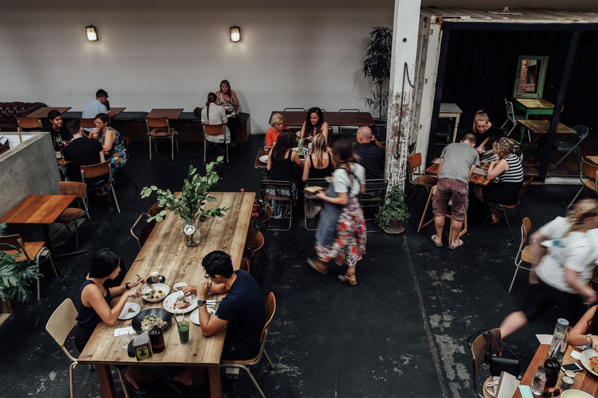

#Slik virker det
Koble opp
Vi kobler opp alle systemene dine på 15 minutter.
Få råd
Du får nye råd hver dag, basert på tallene dine og kvalitetssikret av folk fra restaurantbransjen.
Se effekten
Logg inn, bruk rådene og se effekten i kroner og øre.

Ofte stilte spørsmål
Hvem passer Scope for?
Restauranter, kafeer og barer, enten dere driver ett sted eller flere.
Må vi bytte systemer?
Nei. Scope kobles til systemene dere allerede bruker. Vi avklarer hvilke koblinger som er tilgjengelige før dere starter.
Hvordan brukes AI?
AI analyserer salg, kostnader og bemanning og foreslår tiltak. Rådene kvalitetssikres av folk med restauranterfaring.
Hva innebærer det å være testkunde?
Dere prøver Scope med egne tall og gir tilbakemeldinger underveis. Vi hjelper med oppsett og følger dere opp.
Koster det noe å teste?
Testperioden er gratis og uten binding. Vi avtaler omfang og varighet før dere starter.
Hvordan blir vi med?
Send en e-post til post@scopeanalytics.no med litt om restauranten og systemene dere bruker. Så tar vi en prat om veien videre.
Vi søker testkunder
Vær med på å utvikle Scope
Prøv Scope i restauranten, kafeen eller baren din. Tilbakemeldingene deres hjelper oss å bygge et bedre produkt.
- Gratis testing med egne tall
- Hjelp med oppsett og tett oppfølging
- Mulighet til å påvirke produktet
Ingen binding i testperioden.